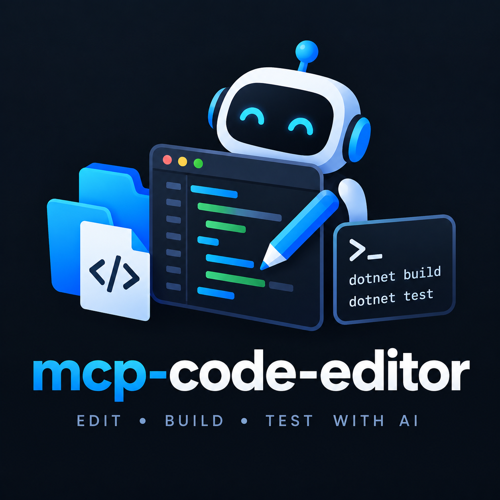

mcp-code-editor
Your AI agent — claude.ai or any MCP client — reads, edits, builds and tests your project directly on disk. Local MCP server, OAuth 2.1 + PKCE, automatic HTTPS tunnel. One line to install, and the agent never commits or pushes — you decide.
irm https://raw.githubusercontent.com/DomitorAI/mcp-code-editor/main/scripts/bootstrap.ps1 | iex
How it works
1 · Install
One line in PowerShell (Windows 10/11 x64). No .NET SDK, no admin, no installer — the icon lands on your desktop.
2 · Start
Pick your project and the access mode (Read-Write / Read-only). The app starts the server on 127.0.0.1 and opens a public HTTPS tunnel.
3 · Connect
Point your AI chat at the endpoint from the window — the OAuth handshake completes by itself.
4 · Work
"Fix the bug in X", "add feature Y", "run the tests". You review with git diff, then commit and push yourself.
Adopted
—
installations
—
page visits
What the agent can do
list_projects · registered project aliaseslist_files · walk the tree (glob, depth limit)read_file · numbered lines, paginationsearch_code · regex across the projectedit_file · exact unique-snippet replacementwrite_file · create / overwrite (size cap, UTF-8)delete_file · single file, never foldersrun_build · dotnet build in the project rootrun_tests · dotnet test (VSTest filter)run_command · any command — build/test/lint for any project type